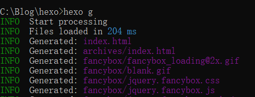

Hexo
我们这里参考hexo官方文档 https://hexo.io/docs ，进行安装配置
使用hexo首先要安装node.js和git
不同环境安装git和node.js的方法（这里之讲解window环境下的搭建）
Git
Git下载
Git安装
git安装也是一路next即可，详细步骤可参考：https://blog.csdn.net/sanxd/article/details/82624127
如下图，git安装成功
Git环境变量配置
git环境变量配置好后，cmd命令产看git版本:git –version,版本产看成功，支持git安装配置完成。
1 | C:\Users\xdj>git --version |
1 | C:\Users\xdj>git --version |
Node.js
Node.js下载
Node.js安装
双击node.js setup 弹出安装页面，然后一直点击下一步就可以了
Node.js环境变量配置:
node.js环境配置好后，进入cmd 输入node -v查看版本成功至此node安装配置完成
1 | C:\Users\xdj>node -v |
Hexo安装
使用npm国内源
我们需要新建一个新的文件夹（我这里在c盘下新建了一个Blog的文件夹） cmd进入blog，修改npm源为国内淘宝的源以提高速度1 | C:\Blog>npm install -g cnpm --registry=https://registry.npm.taobao.org |
检测是否安装成功
1 | C:\Blog>cnpm -v |
registry=https://r.npm.taobao.org 说明淘宝源安装成功
如果出现npm不是内部命令的情况，可以输入一下命令解决
1 | C:\Blog>npm install -g cnpm |
Hexo组件安装
我们回到hexo官方文档，根据文档介绍我们需要使用npm install -g hexo-cli命令安装hexo组件，使系统支持hexo
1 | C:\Blog>npm install -g hexo-cli |
Hexo源码下载
Hexo源码下载执行如下操作：
1 | C:\Blog> hexo init hexo |
hexo init hexo命令会从hexo的服务器上将hexo的源码下载下来放在我们定义的hexo文件夹下
Hexo安装启动
npm install安装hexo
安装完成后，输入hexo s启动服务器
1 | C:\Blog\hexo>hexo s |
启动好之后，会提示可以通过http://localhost:4000地址访问博客，如下图：
博客编辑
博客写在哪个地方？博客文档存放在hexo/source/_posts 目录下：
每一个.md文件就是一篇博客文章
这里想要在文档中插入图片，必须先在将_config.yml配置文件的 _asset_folder属性设为true，通过
这样的格式命令就可以在文档中插入图片了。更多markdown语法学习可参考： https://www.jianshu.com/p/8da1f362f898
博客主题
主题下载
如果想要不同的博客主题可以在 hexo官网 https://hexo.io/themes/ 上选择喜欢的主题下载
点击主题名称进入主题的github仓库
复制主题仓库链接
cmd命令进入themes文件夹，将主题的仓库代码克隆下来
1 | C:\Blog\hexo>cd themes |
主题下载完成
主题更换
将_config.ym配置文件中主题的配置改为新下载的主题
cmd命令hexo s重启服务 访问http://localhost:4000，如下图，我们可以看到博客主题已经更换成功了
Github
博客编写完之后如何部署到github？
根据hexo官方文档上描述：通过 npm install hexo-deployer-git –save 命令安装git在hexo上的插件，
安装完成后就可以通过 hexo d 命令将博客部署到GitHub上，实现一键部署。
1 | C:\Blog\hexo>npm install hexo-deployer-git --save |
配置_config.yml
打开配置文件，先修改url和root的值，如不修改则访问博客（非本地访问）时无法加载样式
拉到配置文档尾部，如下图：
那么这里要怎么配置呢？根据hexo官方文档描述：
创建github.io仓库
许在你的github上创建 用户名.github.io仓库
创建blog仓库
创建一个博客的blog仓库（仓库名自定义，博客内容上传至此仓库，博客构建好后就可以通过：用户名.github.io/blog 进行访问）
将链接复制进_config.yml配置文件即可，如下图：
生成静态页面
接下来就可以通过 hexo g命令生成所有的静态页
1 | C:\Blog\hexo>hexo g |

设置github账号密码
通过以下git命令设置你的github账号密码：账号密码：
1 | C:\Blog\hexo\themes>git config --global user.name "yourAccount" |
部署博客至Github
然后在通过hexo d 命令将博客部署到github上了
1 | C:\Blog\hexo>hexo d |
我们进入github.io仓库就能看到，之前用hexo g生成的所有静态页面都已经部署上去了
访问博客
最后我们通过链接 https://xdj-java-001.github.io/blog/ 访问博客
访问成功，至此博客搭建完成！
最后更新： 2020年04月21日 00:16
原始链接： http://xdj-java-001.github.io/blog/2020/04/18/build-blog/